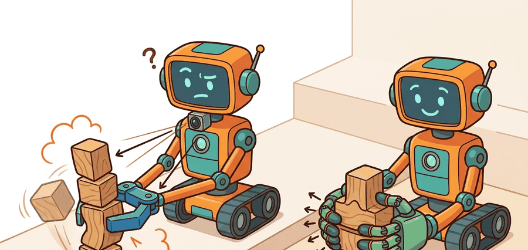

"The world is an exam where the answer key changes after every action."

Figure 43.2A: Section 43.2: Parallel-jaw vs. multi-finger hands is easier to reason about when the figure shows the concept, evidence path, and action consequence in one physical situation.
A Careful Control Loop
Big Picture
Parallel-jaw vs. multi-finger hands is a concrete grasping and dexterous manipulation skill. The page treats it as an embodied loop with named observations, actions, physical constraints, metrics, and recovery behavior.
What This Section Develops
This section develops parallel-jaw versus multi-finger hands as a concrete embodied AI skill rather than a label. The core contract is: observe contact count, finger kinematics, reachable surfaces, and object affordances, select the end-effector and action representation that match the task, and judge the result with success per hardware complexity and recovery effort.
The reader should connect this contract to earlier material on coordinate frames, control foundations, simulation stack. Those links matter because Part IX skills fail at interfaces: a good model with the wrong frame, timing budget, or evaluation panel still produces a fragile robot.
Action Is The Test
Dexterity begins when the robot treats contact as information, not only as a way to hold an object. For Parallel-jaw vs. multi-finger hands, the decisive question is whether the loop can recover from a multi-finger hand adds action dimensions before the task needs dexterity.
Figure 43.2.1 makes the section contract explicit: each box is an artifact the reader can inspect instead of a vague promise that the agent "understands" the task.
Figure 43.2.1 maps Parallel-jaw vs. multi-finger hands in Grasping and Dexterous Manipulation to the same inspectable loop used throughout Part IX: observable state, decision constraints, action interface, and evidence metric.
Theory
The minimal formal object is a partially observed control loop. At time $t$, the agent receives $o_t$, estimates $\hat s_t$, chooses action $a_t$, and receives a new observation $o_{t+1}$. In Parallel-jaw vs. multi-finger hands, the important state variables are contact count, finger kinematics, reachable surfaces, and object affordances, while the action interface is to select the end-effector and action representation that match the task.
The method is useful only if it improves a construct-matched measurement: success per hardware complexity and recovery effort. That metric must be co-computed for the baseline and the library shortcut on the same scenario panel, with the same seed policy and the same termination rules.
Mechanism
The mechanism is not a black box. It is a chain of observation encoding, state estimation, constraint checking, action selection, execution, and verification. Each link should emit a log record so a failure can be traced to perception, state, planning, control, timing, data coverage, or evaluation.
Worked Example
Use the evidence record in Code Fragment 43.2.1 before implementing a model. It forces the section to state what is measured, which maintained tool can reproduce the experiment, and which failure deserves a deliberate test case.
# Record one evidence artifact for Parallel-jaw vs. multi-finger hands.
# Use the same schema for the hand-built baseline and the library route.
from dataclasses import dataclass, asdict
@dataclass
class SkillEvidence:
section: str
observable: str
action_interface: str
metric: str
tool_route: str
expected_failure: str
record = SkillEvidence(
section="43.2",
observable="contact count, finger kinematics, reachable surfaces, and object affordances",
action_interface="select the end-effector and action representation that match the task",
metric="success per hardware complexity and recovery effort",
tool_route="robosuite, MuJoCo, and ManiSkill",
expected_failure="a multi-finger hand adds action dimensions before the task needs dexterity",
)
print(asdict(record))
Code Fragment 43.2.1 creates a reproducible evidence record for Parallel-jaw vs. multi-finger hands, including the observation, action interface, metric, library route, and expected failure.
Expected output: the printed trace for Parallel-jaw vs. multi-finger hands should expose the method configuration, the measured evidence field, and the failure label. If one of those fields is missing or unchanged under the perturbation, the example is not yet an evaluation artifact.
Library Shortcut
The hand-built evidence record is about 25 lines. In practice, use Dex-Net style scoring, robomimic, ManiSkill, MuJoCo, and LeRobot to handle interfaces, physics or datasets, logging, batching, and repeatable evaluation. The hand-built version remains useful because it states the contract that the library route must preserve.
Practical Recipe
Write the skill contract: observable variables, action interface, metric, allowed recovery actions, and stop conditions.
Build the smallest baseline that can fail in an interpretable way.
Run the maintained library version with the same inputs, scenarios, and metric code.
Add one perturbation aimed at the expected failure: a multi-finger hand adds action dimensions before the task needs dexterity.
Save one artifact containing config, seeds, logs, summary metrics, and two representative traces.
Common Failure Mode
The common mistake is to evaluate a component in isolation and then assume the closed loop will inherit that score. Embodied systems often fail at the interfaces between components.
Practical Example
A robotics team using parallel-jaw vs. multi-finger hands should log not only final success, but intermediate observations, chosen actions, controller status, and recovery events. The logs reveal whether the method is solving the task or merely passing the easiest episodes.
Research Frontier
Frontier systems increasingly combine learned policies with structured constraints, tool use, large datasets, and simulation-driven evaluation. Claims from vendor releases should be treated as frontier watch items until independent evaluations or reproducible artifacts appear.
Self Check
Can you name the observation, state estimate, action, success metric, and most likely failure mode for parallel-jaw vs. multi-finger hands? If not, the system boundary is still too vague.
Builder's Deep Dive
Parallel-jaw vs. multi-finger hands becomes robust when the chapter separates three claims. The conceptual claim explains why the skill should work. The systems claim explains which interface changes. The evidence claim records which same-panel metric would convince a skeptical builder.
For Grasping and Dexterous Manipulation, the important habit is to keep physics in the loop. Geometry, contact, timing, energy, and safety constraints should appear in the artifact, not in a later explanation after the experiment has already failed.
Practical Tool Choices For This Section
Tool or Library
Role in the Topic
Builder Advice
robosuite, MuJoCo, and ManiSkill
Main practical route for Parallel-jaw vs. multi-finger hands
Use it after the baseline contract is explicit and keep the same artifact schema.
ROS 2 logs
Interface and timing evidence
Record observations, commands, controller status, and verifier events together.
Same-panel evaluation script
Construct-matched comparison
Compare methods only when metrics are co-computed on one scenario panel.
Create one scenario for Parallel-jaw vs. multi-finger hands, run the baseline and the robosuite, MuJoCo, and ManiSkill route on the same inputs, then label each failure as perception, state, planning, control, timing, data coverage, or evaluation.
Failure Analysis Pattern
When Parallel-jaw vs. multi-finger hands fails, do not collapse the whole method into one score. Assign the failure to a subsystem, rerun one perturbation that isolates the suspected cause, and keep the trace as a reusable diagnostic case.
Section References
Canonical support for Parallel-jaw vs. multi-finger hands: MuJoCo, Drake, ManiSkill, ROS 2, MoveIt, CARLA, nuScenes, Waymo Open Dataset, tactile sensing, locomotion, manipulation, and AV evaluation literature.
Use these sources to verify dynamics, contact, sensors, planning, embodiment constraints, and evaluation panels.
Key Takeaway
Parallel-jaw vs. multi-finger hands is useful when it makes the perception-action loop more reliable, not when it merely adds a more impressive model name.
Exercise 43.2.1
Design a same-panel experiment for Parallel-jaw vs. multi-finger hands. Specify the scenario set, the baseline, the robosuite, MuJoCo, and ManiSkill library route, the metric computation, and one perturbation that targets this failure: a multi-finger hand adds action dimensions before the task needs dexterity.